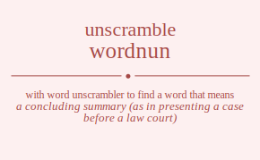

The word found after unscrambling wordnun means that a concluding summary (as in presenting a case before a law court), .

The word found after unscrambling wordnun means that a concluding summary (as in presenting a case before a law court), .
You can also find solutions for different combinations of letters in wordnun like wordnun wordnnu wordunn wordunn wordnnu wordnun worndun worndnu wornudn wornund wornndu wornnud worudnn worudnn worundn worunnd worundn worunnd worndnu worndun wornndu wornnud wornudn wornund wodrnun wodrnnu wodrunn wodrunn wodrnnu wodrnun wodnrun wodnrnu wodnurn wodnunr wodnnru wodnnur wodurnn wodurnn wodunrn wodunnr wodunrn wodunnr wodnrnu wodnrun wodnnru wodnnur wodnurn wodnunr wonrdun wonrdnu wonrudn wonrund wonrndu wonrnud wondrun wondrnu wondurn wondunr wondnru wondnur wonurdn wonurnd wonudrn wonudnr wonunrd wonundr wonnrdu wonnrud wonndru wonndur wonnurd wonnudr wourdnn wourdnn wourndn wournnd wourndn wournnd woudrnn woudrnn woudnrn woudnnr woudnrn woudnnr wounrdn wounrnd woundrn woundnr wounnrd wounndr wounrdn wounrnd woundrn woundnr wounnrd wounndr wonrdnu wonrdun wonrndu wonrnud wonrudn wonrund wondrnu wondrun wondnru wondnur wondurn wondunr wonnrdu wonnrud wonndru wonndur wonnurd wonnudr wonurdn wonurnd wonudrn wonudnr wonunrd wonundr wrodnun wrodnnu wrodunn wrodunn wrodnnu wrodnun wrondun wrondnu wronudn wronund wronndu wronnud wroudnn wroudnn wroundn wrounnd wroundn wrounnd wrondnu wrondun wronndu wronnud wronudn wronund wrdonun wrdonnu wrdounn wrdounn wrdonnu wrdonun wrdnoun wrdnonu wrdnuon wrdnuno wrdnnou wrdnnuo wrduonn wrduonn wrdunon wrdunno wrdunon wrdunno wrdnonu wrdnoun wrdnnou wrdnnuo wrdnuon wrdnuno wrnodun wrnodnu wrnoudn wrnound wrnondu wrnonud wrndoun wrndonu wrnduon wrnduno wrndnou wrndnuo wrnuodn wrnuond wrnudon wrnudno wrnunod wrnundo wrnnodu wrnnoud wrnndou wrnnduo wrnnuod wrnnudo wruodnn wruodnn wruondn wruonnd wruondn wruonnd wrudonn wrudonn wrudnon wrudnno wrudnon wrudnno wrunodn wrunond wrundon wrundno wrunnod wrunndo wrunodn wrunond wrundon wrundno wrunnod wrunndo wrnodnu wrnodun wrnondu wrnonud wrnoudn wrnound wrndonu wrndoun wrndnou wrndnuo wrnduon wrnduno wrnnodu wrnnoud wrnndou wrnnduo wrnnuod wrnnudo wrnuodn wrnuond wrnudon wrnudno wrnunod wrnundo wdornun wdornnu wdorunn wdorunn wdornnu wdornun wdonrun wdonrnu wdonurn wdonunr wdonnru wdonnur wdournn wdournn wdounrn wdounnr wdounrn wdounnr wdonrnu wdonrun wdonnru wdonnur wdonurn wdonunr wdronun wdronnu wdrounn wdrounn wdronnu wdronun wdrnoun wdrnonu wdrnuon wdrnuno wdrnnou wdrnnuo wdruonn wdruonn wdrunon wdrunno wdrunon wdrunno wdrnonu wdrnoun wdrnnou wdrnnuo wdrnuon wdrnuno wdnorun wdnornu wdnourn wdnounr wdnonru wdnonur wdnroun wdnronu wdnruon wdnruno wdnrnou wdnrnuo wdnuorn wdnuonr wdnuron wdnurno wdnunor wdnunro wdnnoru wdnnour wdnnrou wdnnruo wdnnuor wdnnuro wduornn wduornn wduonrn wduonnr wduonrn wduonnr wduronn wduronn wdurnon wdurnno wdurnon wdurnno wdunorn wdunonr wdunron wdunrno wdunnor wdunnro wdunorn wdunonr wdunron wdunrno wdunnor wdunnro wdnornu wdnorun wdnonru wdnonur wdnourn wdnounr wdnronu wdnroun wdnrnou wdnrnuo wdnruon wdnruno wdnnoru wdnnour wdnnrou wdnnruo wdnnuor wdnnuro wdnuorn wdnuonr wdnuron wdnurno wdnunor wdnunro wnordun wnordnu wnorudn wnorund wnorndu wnornud wnodrun wnodrnu wnodurn wnodunr wnodnru wnodnur wnourdn wnournd wnoudrn wnoudnr wnounrd wnoundr wnonrdu wnonrud wnondru wnondur wnonurd wnonudr wnrodun wnrodnu wnroudn wnround wnrondu wnronud wnrdoun wnrdonu wnrduon wnrduno wnrdnou wnrdnuo wnruodn wnruond wnrudon wnrudno wnrunod wnrundo wnrnodu wnrnoud wnrndou wnrnduo wnrnuod wnrnudo wndorun wndornu wndourn wndounr wndonru wndonur wndroun wndronu wndruon wndruno wndrnou wndrnuo wnduorn wnduonr wnduron wndurno wndunor wndunro wndnoru wndnour wndnrou wndnruo wndnuor wndnuro wnuordn wnuornd wnuodrn wnuodnr wnuonrd wnuondr wnurodn wnurond wnurdon wnurdno wnurnod wnurndo wnudorn wnudonr wnudron wnudrno wnudnor wnudnro wnunord wnunodr wnunrod wnunrdo wnundor wnundro wnnordu wnnorud wnnodru wnnodur wnnourd wnnoudr wnnrodu wnnroud wnnrdou wnnrduo wnnruod wnnrudo wnndoru wnndour wnndrou wnndruo wnnduor wnnduro wnnuord wnnuodr wnnurod wnnurdo wnnudor wnnudro wuordnn wuordnn wuorndn wuornnd wuorndn wuornnd wuodrnn wuodrnn wuodnrn wuodnnr wuodnrn wuodnnr wuonrdn wuonrnd wuondrn wuondnr wuonnrd wuonndr wuonrdn wuonrnd wuondrn wuondnr wuonnrd wuonndr wurodnn wurodnn wurondn wuronnd wurondn wuronnd wurdonn wurdonn wurdnon wurdnno wurdnon wurdnno wurnodn wurnond wurndon wurndno wurnnod wurnndo wurnodn wurnond wurndon wurndno wurnnod wurnndo wudornn wudornn wudonrn wudonnr wudonrn wudonnr wudronn wudronn wudrnon wudrnno wudrnon wudrnno wudnorn wudnonr wudnron wudnrno wudnnor wudnnro wudnorn wudnonr wudnron wudnrno wudnnor wudnnro wunordn wunornd wunodrn wunodnr wunonrd wunondr wunrodn wunrond wunrdon wunrdno wunrnod wunrndo wundorn wundonr wundron wundrno wundnor wundnro wunnord wunnodr wunnrod wunnrdo wunndor wunndro wunordn wunornd wunodrn wunodnr wunonrd wunondr wunrodn wunrond wunrdon wunrdno wunrnod wunrndo wundorn wundonr wundron wundrno wundnor wundnro wunnord wunnodr wunnrod wunnrdo wunndor wunndro wnordnu wnordun wnorndu wnornud wnorudn wnorund wnodrnu wnodrun wnodnru wnodnur wnodurn wnodunr wnonrdu wnonrud wnondru wnondur wnonurd wnonudr wnourdn wnournd wnoudrn wnoudnr wnounrd wnoundr wnrodnu wnrodun wnrondu wnronud wnroudn wnround wnrdonu wnrdoun wnrdnou wnrdnuo wnrduon wnrduno wnrnodu wnrnoud wnrndou wnrnduo wnrnuod wnrnudo wnruodn wnruond wnrudon wnrudno wnrunod wnrundo wndornu wndorun wndonru wndonur wndourn wndounr wndronu wndroun wndrnou wndrnuo wndruon wndruno wndnoru wndnour wndnrou wndnruo wndnuor wndnuro wnduorn wnduonr wnduron wndurno wndunor wndunro wnnordu wnnorud wnnodru wnnodur wnnourd wnnoudr wnnrodu wnnroud wnnrdou wnnrduo wnnruod wnnrudo wnndoru wnndour wnndrou wnndruo wnnduor wnnduro wnnuord wnnuodr wnnurod wnnurdo wnnudor wnnudro wnuordn wnuornd wnuodrn wnuodnr wnuonrd wnuondr wnurodn wnurond wnurdon wnurdno wnurnod wnurndo wnudorn wnudonr wnudron wnudrno wnudnor wnudnro wnunord wnunodr wnunrod wnunrdo wnundor wnundro owrdnun owrdnnu owrdunn owrdunn owrdnnu owrdnun owrndun owrndnu owrnudn owrnund owrnndu owrnnud owrudnn owrudnn owrundn owrunnd owrundn owrunnd owrndnu owrndun owrnndu owrnnud owrnudn owrnund owdrnun owdrnnu owdrunn owdrunn owdrnnu owdrnun owdnrun owdnrnu owdnurn owdnunr owdnnru owdnnur owdurnn owdurnn owdunrn owdunnr owdunrn owdunnr owdnrnu owdnrun owdnnru owdnnur owdnurn owdnunr ownrdun ownrdnu ownrudn ownrund ownrndu ownrnud owndrun owndrnu owndurn owndunr owndnru owndnur ownurdn ownurnd ownudrn ownudnr ownunrd ownundr ownnrdu ownnrud ownndru ownndur ownnurd ownnudr owurdnn owurdnn owurndn owurnnd owurndn owurnnd owudrnn owudrnn owudnrn owudnnr owudnrn owudnnr owunrdn owunrnd owundrn owundnr owunnrd owunndr owunrdn owunrnd owundrn owundnr owunnrd owunndr ownrdnu ownrdun ownrndu ownrnud ownrudn ownrund owndrnu owndrun owndnru owndnur owndurn owndunr ownnrdu ownnrud ownndru ownndur ownnurd ownnudr ownurdn ownurnd ownudrn ownudnr ownunrd ownundr orwdnun orwdnnu orwdunn orwdunn orwdnnu orwdnun orwndun orwndnu orwnudn orwnund orwnndu orwnnud orwudnn orwudnn orwundn orwunnd orwundn orwunnd orwndnu orwndun orwnndu orwnnud orwnudn orwnund ordwnun ordwnnu ordwunn ordwunn ordwnnu ordwnun ordnwun ordnwnu ordnuwn ordnunw ordnnwu ordnnuw orduwnn orduwnn ordunwn ordunnw ordunwn ordunnw ordnwnu ordnwun ordnnwu ordnnuw ordnuwn ordnunw ornwdun ornwdnu ornwudn ornwund ornwndu ornwnud orndwun orndwnu ornduwn orndunw orndnwu orndnuw ornuwdn ornuwnd ornudwn ornudnw ornunwd ornundw ornnwdu ornnwud ornndwu ornnduw ornnuwd ornnudw oruwdnn oruwdnn oruwndn oruwnnd oruwndn oruwnnd orudwnn orudwnn orudnwn orudnnw orudnwn orudnnw orunwdn orunwnd orundwn orundnw orunnwd orunndw orunwdn orunwnd orundwn orundnw orunnwd orunndw ornwdnu ornwdun ornwndu ornwnud ornwudn ornwund orndwnu orndwun orndnwu orndnuw ornduwn orndunw ornnwdu ornnwud ornndwu ornnduw ornnuwd ornnudw ornuwdn ornuwnd ornudwn ornudnw ornunwd ornundw odwrnun odwrnnu odwrunn odwrunn odwrnnu odwrnun odwnrun odwnrnu odwnurn odwnunr odwnnru odwnnur odwurnn odwurnn odwunrn odwunnr odwunrn odwunnr odwnrnu odwnrun odwnnru odwnnur odwnurn odwnunr odrwnun odrwnnu odrwunn odrwunn odrwnnu odrwnun odrnwun odrnwnu odrnuwn odrnunw odrnnwu odrnnuw odruwnn odruwnn odrunwn odrunnw odrunwn odrunnw odrnwnu odrnwun odrnnwu odrnnuw odrnuwn odrnunw odnwrun odnwrnu odnwurn odnwunr odnwnru odnwnur odnrwun odnrwnu odnruwn odnrunw odnrnwu odnrnuw odnuwrn odnuwnr odnurwn odnurnw odnunwr odnunrw odnnwru odnnwur odnnrwu odnnruw odnnuwr odnnurw oduwrnn oduwrnn oduwnrn oduwnnr oduwnrn oduwnnr odurwnn odurwnn odurnwn odurnnw odurnwn odurnnw odunwrn odunwnr odunrwn odunrnw odunnwr odunnrw odunwrn odunwnr odunrwn odunrnw odunnwr odunnrw odnwrnu odnwrun odnwnru odnwnur odnwurn odnwunr odnrwnu odnrwun odnrnwu odnrnuw odnruwn odnrunw odnnwru odnnwur odnnrwu odnnruw odnnuwr odnnurw odnuwrn odnuwnr odnurwn odnurnw odnunwr odnunrw onwrdun onwrdnu onwrudn onwrund onwrndu onwrnud onwdrun onwdrnu onwdurn onwdunr onwdnru onwdnur onwurdn onwurnd onwudrn onwudnr onwunrd onwundr onwnrdu onwnrud onwndru onwndur onwnurd onwnudr onrwdun onrwdnu onrwudn onrwund onrwndu onrwnud onrdwun onrdwnu onrduwn onrdunw onrdnwu onrdnuw onruwdn onruwnd onrudwn onrudnw onrunwd onrundw onrnwdu onrnwud onrndwu onrnduw onrnuwd onrnudw ondwrun ondwrnu ondwurn ondwunr ondwnru ondwnur ondrwun ondrwnu ondruwn ondrunw ondrnwu ondrnuw onduwrn onduwnr ondurwn ondurnw ondunwr ondunrw ondnwru ondnwur ondnrwu ondnruw ondnuwr ondnurw onuwrdn onuwrnd onuwdrn onuwdnr onuwnrd onuwndr onurwdn onurwnd onurdwn onurdnw onurnwd onurndw onudwrn onudwnr onudrwn onudrnw onudnwr onudnrw onunwrd onunwdr onunrwd onunrdw onundwr onundrw onnwrdu onnwrud onnwdru onnwdur onnwurd onnwudr onnrwdu onnrwud onnrdwu onnrduw onnruwd onnrudw onndwru onndwur onndrwu onndruw onnduwr onndurw onnuwrd onnuwdr onnurwd onnurdw onnudwr onnudrw ouwrdnn ouwrdnn ouwrndn ouwrnnd ouwrndn ouwrnnd ouwdrnn ouwdrnn ouwdnrn ouwdnnr ouwdnrn ouwdnnr ouwnrdn ouwnrnd ouwndrn ouwndnr ouwnnrd ouwnndr ouwnrdn ouwnrnd ouwndrn ouwndnr ouwnnrd ouwnndr ourwdnn ourwdnn ourwndn ourwnnd ourwndn ourwnnd ourdwnn ourdwnn ourdnwn ourdnnw ourdnwn ourdnnw ournwdn ournwnd ourndwn ourndnw ournnwd ournndw ournwdn ournwnd ourndwn ourndnw ournnwd ournndw oudwrnn oudwrnn oudwnrn oudwnnr oudwnrn oudwnnr oudrwnn oudrwnn oudrnwn oudrnnw oudrnwn oudrnnw oudnwrn oudnwnr oudnrwn oudnrnw oudnnwr oudnnrw oudnwrn oudnwnr oudnrwn oudnrnw oudnnwr oudnnrw ounwrdn ounwrnd ounwdrn ounwdnr ounwnrd ounwndr ounrwdn ounrwnd ounrdwn ounrdnw ounrnwd ounrndw oundwrn oundwnr oundrwn oundrnw oundnwr oundnrw ounnwrd ounnwdr ounnrwd ounnrdw ounndwr ounndrw ounwrdn ounwrnd ounwdrn ounwdnr ounwnrd ounwndr ounrwdn ounrwnd ounrdwn ounrdnw ounrnwd ounrndw oundwrn oundwnr oundrwn oundrnw oundnwr oundnrw ounnwrd ounnwdr ounnrwd ounnrdw ounndwr ounndrw onwrdnu onwrdun onwrndu onwrnud onwrudn onwrund onwdrnu onwdrun onwdnru onwdnur onwdurn onwdunr onwnrdu onwnrud onwndru onwndur onwnurd onwnudr onwurdn onwurnd onwudrn onwudnr onwunrd onwundr onrwdnu onrwdun onrwndu onrwnud onrwudn onrwund onrdwnu onrdwun onrdnwu onrdnuw onrduwn onrdunw onrnwdu onrnwud onrndwu onrnduw onrnuwd onrnudw onruwdn onruwnd onrudwn onrudnw onrunwd onrundw ondwrnu ondwrun ondwnru ondwnur ondwurn ondwunr ondrwnu ondrwun ondrnwu ondrnuw ondruwn ondrunw ondnwru ondnwur ondnrwu ondnruw ondnuwr ondnurw onduwrn onduwnr ondurwn ondurnw ondunwr ondunrw onnwrdu onnwrud onnwdru onnwdur onnwurd onnwudr onnrwdu onnrwud onnrdwu onnrduw onnruwd onnrudw onndwru onndwur onndrwu onndruw onnduwr onndurw onnuwrd onnuwdr onnurwd onnurdw onnudwr onnudrw onuwrdn onuwrnd onuwdrn onuwdnr onuwnrd onuwndr onurwdn onurwnd onurdwn onurdnw onurnwd onurndw onudwrn onudwnr onudrwn onudrnw onudnwr onudnrw onunwrd onunwdr onunrwd onunrdw onundwr onundrw rwodnun rwodnnu rwodunn rwodunn rwodnnu rwodnun rwondun rwondnu rwonudn rwonund rwonndu rwonnud rwoudnn rwoudnn rwoundn rwounnd rwoundn rwounnd rwondnu rwondun rwonndu rwonnud rwonudn rwonund rwdonun rwdonnu rwdounn rwdounn rwdonnu rwdonun rwdnoun rwdnonu rwdnuon rwdnuno rwdnnou rwdnnuo rwduonn rwduonn rwdunon rwdunno rwdunon rwdunno rwdnonu rwdnoun rwdnnou rwdnnuo rwdnuon rwdnuno rwnodun rwnodnu rwnoudn rwnound rwnondu rwnonud rwndoun rwndonu rwnduon rwnduno rwndnou rwndnuo rwnuodn rwnuond rwnudon rwnudno rwnunod rwnundo rwnnodu rwnnoud rwnndou rwnnduo rwnnuod rwnnudo rwuodnn rwuodnn rwuondn rwuonnd rwuondn rwuonnd rwudonn rwudonn rwudnon rwudnno rwudnon rwudnno rwunodn rwunond rwundon rwundno rwunnod rwunndo rwunodn rwunond rwundon rwundno rwunnod rwunndo rwnodnu rwnodun rwnondu rwnonud rwnoudn rwnound rwndonu rwndoun rwndnou rwndnuo rwnduon rwnduno rwnnodu rwnnoud rwnndou rwnnduo rwnnuod rwnnudo rwnuodn rwnuond rwnudon rwnudno rwnunod rwnundo rowdnun rowdnnu rowdunn rowdunn rowdnnu rowdnun rowndun rowndnu rownudn rownund rownndu rownnud rowudnn rowudnn rowundn rowunnd rowundn rowunnd rowndnu rowndun rownndu rownnud rownudn rownund rodwnun rodwnnu rodwunn rodwunn rodwnnu rodwnun rodnwun rodnwnu rodnuwn rodnunw rodnnwu rodnnuw roduwnn roduwnn rodunwn rodunnw rodunwn rodunnw rodnwnu rodnwun rodnnwu rodnnuw rodnuwn rodnunw ronwdun ronwdnu ronwudn ronwund ronwndu ronwnud rondwun rondwnu ronduwn rondunw rondnwu rondnuw ronuwdn ronuwnd ronudwn ronudnw ronunwd ronundw ronnwdu ronnwud ronndwu ronnduw ronnuwd ronnudw rouwdnn rouwdnn rouwndn rouwnnd rouwndn rouwnnd roudwnn roudwnn roudnwn roudnnw roudnwn roudnnw rounwdn rounwnd roundwn roundnw rounnwd rounndw rounwdn rounwnd roundwn roundnw rounnwd rounndw ronwdnu ronwdun ronwndu ronwnud ronwudn ronwund rondwnu rondwun rondnwu rondnuw ronduwn rondunw ronnwdu ronnwud ronndwu ronnduw ronnuwd ronnudw ronuwdn ronuwnd ronudwn ronudnw ronunwd ronundw rdwonun rdwonnu rdwounn rdwounn rdwonnu rdwonun rdwnoun rdwnonu rdwnuon rdwnuno rdwnnou rdwnnuo rdwuonn rdwuonn rdwunon rdwunno rdwunon rdwunno rdwnonu rdwnoun rdwnnou rdwnnuo rdwnuon rdwnuno rdownun rdownnu rdowunn rdowunn rdownnu rdownun rdonwun rdonwnu rdonuwn rdonunw rdonnwu rdonnuw rdouwnn rdouwnn rdounwn rdounnw rdounwn rdounnw rdonwnu rdonwun rdonnwu rdonnuw rdonuwn rdonunw rdnwoun rdnwonu rdnwuon rdnwuno rdnwnou rdnwnuo rdnowun rdnownu rdnouwn rdnounw rdnonwu rdnonuw rdnuwon rdnuwno rdnuown rdnuonw rdnunwo rdnunow rdnnwou rdnnwuo rdnnowu rdnnouw rdnnuwo rdnnuow rduwonn rduwonn rduwnon rduwnno rduwnon rduwnno rduownn rduownn rduonwn rduonnw rduonwn rduonnw rdunwon rdunwno rdunown rdunonw rdunnwo rdunnow rdunwon rdunwno rdunown rdunonw rdunnwo rdunnow rdnwonu rdnwoun rdnwnou rdnwnuo rdnwuon rdnwuno rdnownu rdnowun rdnonwu rdnonuw rdnouwn rdnounw rdnnwou rdnnwuo rdnnowu rdnnouw rdnnuwo rdnnuow rdnuwon rdnuwno rdnuown rdnuonw rdnunwo rdnunow rnwodun rnwodnu rnwoudn rnwound rnwondu rnwonud rnwdoun rnwdonu rnwduon rnwduno rnwdnou rnwdnuo rnwuodn rnwuond rnwudon rnwudno rnwunod rnwundo rnwnodu rnwnoud rnwndou rnwnduo rnwnuod rnwnudo rnowdun rnowdnu rnowudn rnowund rnowndu rnownud rnodwun rnodwnu rnoduwn rnodunw rnodnwu rnodnuw rnouwdn rnouwnd rnoudwn rnoudnw rnounwd rnoundw rnonwdu rnonwud rnondwu rnonduw rnonuwd rnonudw rndwoun rndwonu rndwuon rndwuno rndwnou rndwnuo rndowun rndownu rndouwn rndounw rndonwu rndonuw rnduwon rnduwno rnduown rnduonw rndunwo rndunow rndnwou rndnwuo rndnowu rndnouw rndnuwo rndnuow rnuwodn rnuwond rnuwdon rnuwdno rnuwnod rnuwndo rnuowdn rnuownd rnuodwn rnuodnw rnuonwd rnuondw rnudwon rnudwno rnudown rnudonw rnudnwo rnudnow rnunwod rnunwdo rnunowd rnunodw rnundwo rnundow rnnwodu rnnwoud rnnwdou rnnwduo rnnwuod rnnwudo rnnowdu rnnowud rnnodwu rnnoduw rnnouwd rnnoudw rnndwou rnndwuo rnndowu rnndouw rnnduwo rnnduow rnnuwod rnnuwdo rnnuowd rnnuodw rnnudwo rnnudow ruwodnn ruwodnn ruwondn ruwonnd ruwondn ruwonnd ruwdonn ruwdonn ruwdnon ruwdnno ruwdnon ruwdnno ruwnodn ruwnond ruwndon ruwndno ruwnnod ruwnndo ruwnodn ruwnond ruwndon ruwndno ruwnnod ruwnndo ruowdnn ruowdnn ruowndn ruownnd ruowndn ruownnd ruodwnn ruodwnn ruodnwn ruodnnw ruodnwn ruodnnw ruonwdn ruonwnd ruondwn ruondnw ruonnwd ruonndw ruonwdn ruonwnd ruondwn ruondnw ruonnwd ruonndw rudwonn rudwonn rudwnon rudwnno rudwnon rudwnno rudownn rudownn rudonwn rudonnw rudonwn rudonnw rudnwon rudnwno rudnown rudnonw rudnnwo rudnnow rudnwon rudnwno rudnown rudnonw rudnnwo rudnnow runwodn runwond runwdon runwdno runwnod runwndo runowdn runownd runodwn runodnw runonwd runondw rundwon rundwno rundown rundonw rundnwo rundnow runnwod runnwdo runnowd runnodw runndwo runndow runwodn runwond runwdon runwdno runwnod runwndo runowdn runownd runodwn runodnw runonwd runondw rundwon rundwno rundown rundonw rundnwo rundnow runnwod runnwdo runnowd runnodw runndwo runndow rnwodnu rnwodun rnwondu rnwonud rnwoudn rnwound rnwdonu rnwdoun rnwdnou rnwdnuo rnwduon rnwduno rnwnodu rnwnoud rnwndou rnwnduo rnwnuod rnwnudo rnwuodn rnwuond rnwudon rnwudno rnwunod rnwundo rnowdnu rnowdun rnowndu rnownud rnowudn rnowund rnodwnu rnodwun rnodnwu rnodnuw rnoduwn rnodunw rnonwdu rnonwud rnondwu rnonduw rnonuwd rnonudw rnouwdn rnouwnd rnoudwn rnoudnw rnounwd rnoundw rndwonu rndwoun rndwnou rndwnuo rndwuon rndwuno rndownu rndowun rndonwu rndonuw rndouwn rndounw rndnwou rndnwuo rndnowu rndnouw rndnuwo rndnuow rnduwon rnduwno rnduown rnduonw rndunwo rndunow rnnwodu rnnwoud rnnwdou rnnwduo rnnwuod rnnwudo rnnowdu rnnowud rnnodwu rnnoduw rnnouwd rnnoudw rnndwou rnndwuo rnndowu rnndouw rnnduwo rnnduow rnnuwod rnnuwdo rnnuowd rnnuodw rnnudwo rnnudow rnuwodn rnuwond rnuwdon rnuwdno rnuwnod rnuwndo rnuowdn rnuownd rnuodwn rnuodnw rnuonwd rnuondw rnudwon rnudwno rnudown rnudonw rnudnwo rnudnow rnunwod rnunwdo rnunowd rnunodw rnundwo rnundow dwornun dwornnu dworunn dworunn dwornnu dwornun dwonrun dwonrnu dwonurn dwonunr dwonnru dwonnur dwournn dwournn dwounrn dwounnr dwounrn dwounnr dwonrnu dwonrun dwonnru dwonnur dwonurn dwonunr dwronun dwronnu dwrounn dwrounn dwronnu dwronun dwrnoun dwrnonu dwrnuon dwrnuno dwrnnou dwrnnuo dwruonn dwruonn dwrunon dwrunno dwrunon dwrunno dwrnonu dwrnoun dwrnnou dwrnnuo dwrnuon dwrnuno dwnorun dwnornu dwnourn dwnounr dwnonru dwnonur dwnroun dwnronu dwnruon dwnruno dwnrnou dwnrnuo dwnuorn dwnuonr dwnuron dwnurno dwnunor dwnunro dwnnoru dwnnour dwnnrou dwnnruo dwnnuor dwnnuro dwuornn dwuornn dwuonrn dwuonnr dwuonrn dwuonnr dwuronn dwuronn dwurnon dwurnno dwurnon dwurnno dwunorn dwunonr dwunron dwunrno dwunnor dwunnro dwunorn dwunonr dwunron dwunrno dwunnor dwunnro dwnornu dwnorun dwnonru dwnonur dwnourn dwnounr dwnronu dwnroun dwnrnou dwnrnuo dwnruon dwnruno dwnnoru dwnnour dwnnrou dwnnruo dwnnuor dwnnuro dwnuorn dwnuonr dwnuron dwnurno dwnunor dwnunro dowrnun dowrnnu dowrunn dowrunn dowrnnu dowrnun downrun downrnu downurn downunr downnru downnur dowurnn dowurnn dowunrn dowunnr dowunrn dowunnr downrnu downrun downnru downnur downurn downunr dorwnun dorwnnu dorwunn dorwunn dorwnnu dorwnun dornwun dornwnu dornuwn dornunw dornnwu dornnuw doruwnn doruwnn dorunwn dorunnw dorunwn dorunnw dornwnu dornwun dornnwu dornnuw dornuwn dornunw donwrun donwrnu donwurn donwunr donwnru donwnur donrwun donrwnu donruwn donrunw donrnwu donrnuw donuwrn donuwnr donurwn donurnw donunwr donunrw donnwru donnwur donnrwu donnruw donnuwr donnurw douwrnn douwrnn douwnrn douwnnr douwnrn douwnnr dourwnn dourwnn dournwn dournnw dournwn dournnw dounwrn dounwnr dounrwn dounrnw dounnwr dounnrw dounwrn dounwnr dounrwn dounrnw dounnwr dounnrw donwrnu donwrun donwnru donwnur donwurn donwunr donrwnu donrwun donrnwu donrnuw donruwn donrunw donnwru donnwur donnrwu donnruw donnuwr donnurw donuwrn donuwnr donurwn donurnw donunwr donunrw drwonun drwonnu drwounn drwounn drwonnu drwonun drwnoun drwnonu drwnuon drwnuno drwnnou drwnnuo drwuonn drwuonn drwunon drwunno drwunon drwunno drwnonu drwnoun drwnnou drwnnuo drwnuon drwnuno drownun drownnu drowunn drowunn drownnu drownun dronwun dronwnu dronuwn dronunw dronnwu dronnuw drouwnn drouwnn drounwn drounnw drounwn drounnw dronwnu dronwun dronnwu dronnuw dronuwn dronunw drnwoun drnwonu drnwuon drnwuno drnwnou drnwnuo drnowun drnownu drnouwn drnounw drnonwu drnonuw drnuwon drnuwno drnuown drnuonw drnunwo drnunow drnnwou drnnwuo drnnowu drnnouw drnnuwo drnnuow druwonn druwonn druwnon druwnno druwnon druwnno druownn druownn druonwn druonnw druonwn druonnw drunwon drunwno drunown drunonw drunnwo drunnow drunwon drunwno drunown drunonw drunnwo drunnow drnwonu drnwoun drnwnou drnwnuo drnwuon drnwuno drnownu drnowun drnonwu drnonuw drnouwn drnounw drnnwou drnnwuo drnnowu drnnouw drnnuwo drnnuow drnuwon drnuwno drnuown drnuonw drnunwo drnunow dnworun dnwornu dnwourn dnwounr dnwonru dnwonur dnwroun dnwronu dnwruon dnwruno dnwrnou dnwrnuo dnwuorn dnwuonr dnwuron dnwurno dnwunor dnwunro dnwnoru dnwnour dnwnrou dnwnruo dnwnuor dnwnuro dnowrun dnowrnu dnowurn dnowunr dnownru dnownur dnorwun dnorwnu dnoruwn dnorunw dnornwu dnornuw dnouwrn dnouwnr dnourwn dnournw dnounwr dnounrw dnonwru dnonwur dnonrwu dnonruw dnonuwr dnonurw dnrwoun dnrwonu dnrwuon dnrwuno dnrwnou dnrwnuo dnrowun dnrownu dnrouwn dnrounw dnronwu dnronuw dnruwon dnruwno dnruown dnruonw dnrunwo dnrunow dnrnwou dnrnwuo dnrnowu dnrnouw dnrnuwo dnrnuow dnuworn dnuwonr dnuwron dnuwrno dnuwnor dnuwnro dnuowrn dnuownr dnuorwn dnuornw dnuonwr dnuonrw dnurwon dnurwno dnurown dnuronw dnurnwo dnurnow dnunwor dnunwro dnunowr dnunorw dnunrwo dnunrow dnnworu dnnwour dnnwrou dnnwruo dnnwuor dnnwuro dnnowru dnnowur dnnorwu dnnoruw dnnouwr dnnourw dnnrwou dnnrwuo dnnrowu dnnrouw dnnruwo dnnruow dnnuwor dnnuwro dnnuowr dnnuorw dnnurwo dnnurow duwornn duwornn duwonrn duwonnr duwonrn duwonnr duwronn duwronn duwrnon duwrnno duwrnon duwrnno duwnorn duwnonr duwnron duwnrno duwnnor duwnnro duwnorn duwnonr duwnron duwnrno duwnnor duwnnro duowrnn duowrnn duownrn duownnr duownrn duownnr duorwnn duorwnn duornwn duornnw duornwn duornnw duonwrn duonwnr duonrwn duonrnw duonnwr duonnrw duonwrn duonwnr duonrwn duonrnw duonnwr duonnrw durwonn durwonn durwnon durwnno durwnon durwnno durownn durownn duronwn duronnw duronwn duronnw durnwon durnwno durnown durnonw durnnwo durnnow durnwon durnwno durnown durnonw durnnwo durnnow dunworn dunwonr dunwron dunwrno dunwnor dunwnro dunowrn dunownr dunorwn dunornw dunonwr dunonrw dunrwon dunrwno dunrown dunronw dunrnwo dunrnow dunnwor dunnwro dunnowr dunnorw dunnrwo dunnrow dunworn dunwonr dunwron dunwrno dunwnor dunwnro dunowrn dunownr dunorwn dunornw dunonwr dunonrw dunrwon dunrwno dunrown dunronw dunrnwo dunrnow dunnwor dunnwro dunnowr dunnorw dunnrwo dunnrow dnwornu dnworun dnwonru dnwonur dnwourn dnwounr dnwronu dnwroun dnwrnou dnwrnuo dnwruon dnwruno dnwnoru dnwnour dnwnrou dnwnruo dnwnuor dnwnuro dnwuorn dnwuonr dnwuron dnwurno dnwunor dnwunro dnowrnu dnowrun dnownru dnownur dnowurn dnowunr dnorwnu dnorwun dnornwu dnornuw dnoruwn dnorunw dnonwru dnonwur dnonrwu dnonruw dnonuwr dnonurw dnouwrn dnouwnr dnourwn dnournw dnounwr dnounrw dnrwonu dnrwoun dnrwnou dnrwnuo dnrwuon dnrwuno dnrownu dnrowun dnronwu dnronuw dnrouwn dnrounw dnrnwou dnrnwuo dnrnowu dnrnouw dnrnuwo dnrnuow dnruwon dnruwno dnruown dnruonw dnrunwo dnrunow dnnworu dnnwour dnnwrou dnnwruo dnnwuor dnnwuro dnnowru dnnowur dnnorwu dnnoruw dnnouwr dnnourw dnnrwou dnnrwuo dnnrowu dnnrouw dnnruwo dnnruow dnnuwor dnnuwro dnnuowr dnnuorw dnnurwo dnnurow dnuworn dnuwonr dnuwron dnuwrno dnuwnor dnuwnro dnuowrn dnuownr dnuorwn dnuornw dnuonwr dnuonrw dnurwon dnurwno dnurown dnuronw dnurnwo dnurnow dnunwor dnunwro dnunowr dnunorw dnunrwo dnunrow nwordun nwordnu nworudn nworund nworndu nwornud nwodrun nwodrnu nwodurn nwodunr nwodnru nwodnur nwourdn nwournd nwoudrn nwoudnr nwounrd nwoundr nwonrdu nwonrud nwondru nwondur nwonurd nwonudr nwrodun nwrodnu nwroudn nwround nwrondu nwronud nwrdoun nwrdonu nwrduon nwrduno nwrdnou nwrdnuo nwruodn nwruond nwrudon nwrudno nwrunod nwrundo nwrnodu nwrnoud nwrndou nwrnduo nwrnuod nwrnudo nwdorun nwdornu nwdourn nwdounr nwdonru nwdonur nwdroun nwdronu nwdruon nwdruno nwdrnou nwdrnuo nwduorn nwduonr nwduron nwdurno nwdunor nwdunro nwdnoru nwdnour nwdnrou nwdnruo nwdnuor nwdnuro nwuordn nwuornd nwuodrn nwuodnr nwuonrd nwuondr nwurodn nwurond nwurdon nwurdno nwurnod nwurndo nwudorn nwudonr nwudron nwudrno nwudnor nwudnro nwunord nwunodr nwunrod nwunrdo nwundor nwundro nwnordu nwnorud nwnodru nwnodur nwnourd nwnoudr nwnrodu nwnroud nwnrdou nwnrduo nwnruod nwnrudo nwndoru nwndour nwndrou nwndruo nwnduor nwnduro nwnuord nwnuodr nwnurod nwnurdo nwnudor nwnudro nowrdun nowrdnu nowrudn nowrund nowrndu nowrnud nowdrun nowdrnu nowdurn nowdunr nowdnru nowdnur nowurdn nowurnd nowudrn nowudnr nowunrd nowundr nownrdu nownrud nowndru nowndur nownurd nownudr norwdun norwdnu norwudn norwund norwndu norwnud nordwun nordwnu norduwn nordunw nordnwu nordnuw noruwdn noruwnd norudwn norudnw norunwd norundw nornwdu nornwud norndwu nornduw nornuwd nornudw nodwrun nodwrnu nodwurn nodwunr nodwnru nodwnur nodrwun nodrwnu nodruwn nodrunw nodrnwu nodrnuw noduwrn noduwnr nodurwn nodurnw nodunwr nodunrw nodnwru nodnwur nodnrwu nodnruw nodnuwr nodnurw nouwrdn nouwrnd nouwdrn nouwdnr nouwnrd nouwndr nourwdn nourwnd nourdwn nourdnw nournwd nourndw noudwrn noudwnr noudrwn noudrnw noudnwr noudnrw nounwrd nounwdr nounrwd nounrdw noundwr noundrw nonwrdu nonwrud nonwdru nonwdur nonwurd nonwudr nonrwdu nonrwud nonrdwu nonrduw nonruwd nonrudw nondwru nondwur nondrwu nondruw nonduwr nondurw nonuwrd nonuwdr nonurwd nonurdw nonudwr nonudrw nrwodun nrwodnu nrwoudn nrwound nrwondu nrwonud nrwdoun nrwdonu nrwduon nrwduno nrwdnou nrwdnuo nrwuodn nrwuond nrwudon nrwudno nrwunod nrwundo nrwnodu nrwnoud nrwndou nrwnduo nrwnuod nrwnudo nrowdun nrowdnu nrowudn nrowund nrowndu nrownud nrodwun nrodwnu nroduwn nrodunw nrodnwu nrodnuw nrouwdn nrouwnd nroudwn nroudnw nrounwd nroundw nronwdu nronwud nrondwu nronduw nronuwd nronudw nrdwoun nrdwonu nrdwuon nrdwuno nrdwnou nrdwnuo nrdowun nrdownu nrdouwn nrdounw nrdonwu nrdonuw nrduwon nrduwno nrduown nrduonw nrdunwo nrdunow nrdnwou nrdnwuo nrdnowu nrdnouw nrdnuwo nrdnuow nruwodn nruwond nruwdon nruwdno nruwnod nruwndo nruowdn nruownd nruodwn nruodnw nruonwd nruondw nrudwon nrudwno nrudown nrudonw nrudnwo nrudnow nrunwod nrunwdo nrunowd nrunodw nrundwo nrundow nrnwodu nrnwoud nrnwdou nrnwduo nrnwuod nrnwudo nrnowdu nrnowud nrnodwu nrnoduw nrnouwd nrnoudw nrndwou nrndwuo nrndowu nrndouw nrnduwo nrnduow nrnuwod nrnuwdo nrnuowd nrnuodw nrnudwo nrnudow ndworun ndwornu ndwourn ndwounr ndwonru ndwonur ndwroun ndwronu ndwruon ndwruno ndwrnou ndwrnuo ndwuorn ndwuonr ndwuron ndwurno ndwunor ndwunro ndwnoru ndwnour ndwnrou ndwnruo ndwnuor ndwnuro ndowrun ndowrnu ndowurn ndowunr ndownru ndownur ndorwun ndorwnu ndoruwn ndorunw ndornwu ndornuw ndouwrn ndouwnr ndourwn ndournw ndounwr ndounrw ndonwru ndonwur ndonrwu ndonruw ndonuwr ndonurw ndrwoun ndrwonu ndrwuon ndrwuno ndrwnou ndrwnuo ndrowun ndrownu ndrouwn ndrounw ndronwu ndronuw ndruwon ndruwno ndruown ndruonw ndrunwo ndrunow ndrnwou ndrnwuo ndrnowu ndrnouw ndrnuwo ndrnuow nduworn nduwonr nduwron nduwrno nduwnor nduwnro nduowrn nduownr nduorwn nduornw nduonwr nduonrw ndurwon ndurwno ndurown nduronw ndurnwo ndurnow ndunwor ndunwro ndunowr ndunorw ndunrwo ndunrow ndnworu ndnwour ndnwrou ndnwruo ndnwuor ndnwuro ndnowru ndnowur ndnorwu ndnoruw ndnouwr ndnourw ndnrwou ndnrwuo ndnrowu ndnrouw ndnruwo ndnruow ndnuwor ndnuwro ndnuowr ndnuorw ndnurwo ndnurow nuwordn nuwornd nuwodrn nuwodnr nuwonrd nuwondr nuwrodn nuwrond nuwrdon nuwrdno nuwrnod nuwrndo nuwdorn nuwdonr nuwdron nuwdrno nuwdnor nuwdnro nuwnord nuwnodr nuwnrod nuwnrdo nuwndor nuwndro nuowrdn nuowrnd nuowdrn nuowdnr nuownrd nuowndr nuorwdn nuorwnd nuordwn nuordnw nuornwd nuorndw nuodwrn nuodwnr nuodrwn nuodrnw nuodnwr nuodnrw nuonwrd nuonwdr nuonrwd nuonrdw nuondwr nuondrw nurwodn nurwond nurwdon nurwdno nurwnod nurwndo nurowdn nurownd nurodwn nurodnw nuronwd nurondw nurdwon nurdwno nurdown nurdonw nurdnwo nurdnow nurnwod nurnwdo nurnowd nurnodw nurndwo nurndow nudworn nudwonr nudwron nudwrno nudwnor nudwnro nudowrn nudownr nudorwn nudornw nudonwr nudonrw nudrwon nudrwno nudrown nudronw nudrnwo nudrnow nudnwor nudnwro nudnowr nudnorw nudnrwo nudnrow nunword nunwodr nunwrod nunwrdo nunwdor nunwdro nunowrd nunowdr nunorwd nunordw nunodwr nunodrw nunrwod nunrwdo nunrowd nunrodw nunrdwo nunrdow nundwor nundwro nundowr nundorw nundrwo nundrow nnwordu nnworud nnwodru nnwodur nnwourd nnwoudr nnwrodu nnwroud nnwrdou nnwrduo nnwruod nnwrudo nnwdoru nnwdour nnwdrou nnwdruo nnwduor nnwduro nnwuord nnwuodr nnwurod nnwurdo nnwudor nnwudro nnowrdu nnowrud nnowdru nnowdur nnowurd nnowudr nnorwdu nnorwud nnordwu nnorduw nnoruwd nnorudw nnodwru nnodwur nnodrwu nnodruw nnoduwr nnodurw nnouwrd nnouwdr nnourwd nnourdw nnoudwr nnoudrw nnrwodu nnrwoud nnrwdou nnrwduo nnrwuod nnrwudo nnrowdu nnrowud nnrodwu nnroduw nnrouwd nnroudw nnrdwou nnrdwuo nnrdowu nnrdouw nnrduwo nnrduow nnruwod nnruwdo nnruowd nnruodw nnrudwo nnrudow nndworu nndwour nndwrou nndwruo nndwuor nndwuro nndowru nndowur nndorwu nndoruw nndouwr nndourw nndrwou nndrwuo nndrowu nndrouw nndruwo nndruow nnduwor nnduwro nnduowr nnduorw nndurwo nndurow nnuword nnuwodr nnuwrod nnuwrdo nnuwdor nnuwdro nnuowrd nnuowdr nnuorwd nnuordw nnuodwr nnuodrw nnurwod nnurwdo nnurowd nnurodw nnurdwo nnurdow nnudwor nnudwro nnudowr nnudorw nnudrwo nnudrow uwordnn uwordnn uworndn uwornnd uworndn uwornnd uwodrnn uwodrnn uwodnrn uwodnnr uwodnrn uwodnnr uwonrdn uwonrnd uwondrn uwondnr uwonnrd uwonndr uwonrdn uwonrnd uwondrn uwondnr uwonnrd uwonndr uwrodnn uwrodnn uwrondn uwronnd uwrondn uwronnd uwrdonn uwrdonn uwrdnon uwrdnno uwrdnon uwrdnno uwrnodn uwrnond uwrndon uwrndno uwrnnod uwrnndo uwrnodn uwrnond uwrndon uwrndno uwrnnod uwrnndo uwdornn uwdornn uwdonrn uwdonnr uwdonrn uwdonnr uwdronn uwdronn uwdrnon uwdrnno uwdrnon uwdrnno uwdnorn uwdnonr uwdnron uwdnrno uwdnnor uwdnnro uwdnorn uwdnonr uwdnron uwdnrno uwdnnor uwdnnro uwnordn uwnornd uwnodrn uwnodnr uwnonrd uwnondr uwnrodn uwnrond uwnrdon uwnrdno uwnrnod uwnrndo uwndorn uwndonr uwndron uwndrno uwndnor uwndnro uwnnord uwnnodr uwnnrod uwnnrdo uwnndor uwnndro uwnordn uwnornd uwnodrn uwnodnr uwnonrd uwnondr uwnrodn uwnrond uwnrdon uwnrdno uwnrnod uwnrndo uwndorn uwndonr uwndron uwndrno uwndnor uwndnro uwnnord uwnnodr uwnnrod uwnnrdo uwnndor uwnndro uowrdnn uowrdnn uowrndn uowrnnd uowrndn uowrnnd uowdrnn uowdrnn uowdnrn uowdnnr uowdnrn uowdnnr uownrdn uownrnd uowndrn uowndnr uownnrd uownndr uownrdn uownrnd uowndrn uowndnr uownnrd uownndr uorwdnn uorwdnn uorwndn uorwnnd uorwndn uorwnnd uordwnn uordwnn uordnwn uordnnw uordnwn uordnnw uornwdn uornwnd uorndwn uorndnw uornnwd uornndw uornwdn uornwnd uorndwn uorndnw uornnwd uornndw uodwrnn uodwrnn uodwnrn uodwnnr uodwnrn uodwnnr uodrwnn uodrwnn uodrnwn uodrnnw uodrnwn uodrnnw uodnwrn uodnwnr uodnrwn uodnrnw uodnnwr uodnnrw uodnwrn uodnwnr uodnrwn uodnrnw uodnnwr uodnnrw uonwrdn uonwrnd uonwdrn uonwdnr uonwnrd uonwndr uonrwdn uonrwnd uonrdwn uonrdnw uonrnwd uonrndw uondwrn uondwnr uondrwn uondrnw uondnwr uondnrw uonnwrd uonnwdr uonnrwd uonnrdw uonndwr uonndrw uonwrdn uonwrnd uonwdrn uonwdnr uonwnrd uonwndr uonrwdn uonrwnd uonrdwn uonrdnw uonrnwd uonrndw uondwrn uondwnr uondrwn uondrnw uondnwr uondnrw uonnwrd uonnwdr uonnrwd uonnrdw uonndwr uonndrw urwodnn urwodnn urwondn urwonnd urwondn urwonnd urwdonn urwdonn urwdnon urwdnno urwdnon urwdnno urwnodn urwnond urwndon urwndno urwnnod urwnndo urwnodn urwnond urwndon urwndno urwnnod urwnndo urowdnn urowdnn urowndn urownnd urowndn urownnd urodwnn urodwnn urodnwn urodnnw urodnwn urodnnw uronwdn uronwnd urondwn urondnw uronnwd uronndw uronwdn uronwnd urondwn urondnw uronnwd uronndw urdwonn urdwonn urdwnon urdwnno urdwnon urdwnno urdownn urdownn urdonwn urdonnw urdonwn urdonnw urdnwon urdnwno urdnown urdnonw urdnnwo urdnnow urdnwon urdnwno urdnown urdnonw urdnnwo urdnnow urnwodn urnwond urnwdon urnwdno urnwnod urnwndo urnowdn urnownd urnodwn urnodnw urnonwd urnondw urndwon urndwno urndown urndonw urndnwo urndnow urnnwod urnnwdo urnnowd urnnodw urnndwo urnndow urnwodn urnwond urnwdon urnwdno urnwnod urnwndo urnowdn urnownd urnodwn urnodnw urnonwd urnondw urndwon urndwno urndown urndonw urndnwo urndnow urnnwod urnnwdo urnnowd urnnodw urnndwo urnndow udwornn udwornn udwonrn udwonnr udwonrn udwonnr udwronn udwronn udwrnon udwrnno udwrnon udwrnno udwnorn udwnonr udwnron udwnrno udwnnor udwnnro udwnorn udwnonr udwnron udwnrno udwnnor udwnnro udowrnn udowrnn udownrn udownnr udownrn udownnr udorwnn udorwnn udornwn udornnw udornwn udornnw udonwrn udonwnr udonrwn udonrnw udonnwr udonnrw udonwrn udonwnr udonrwn udonrnw udonnwr udonnrw udrwonn udrwonn udrwnon udrwnno udrwnon udrwnno udrownn udrownn udronwn udronnw udronwn udronnw udrnwon udrnwno udrnown udrnonw udrnnwo udrnnow udrnwon udrnwno udrnown udrnonw udrnnwo udrnnow udnworn udnwonr udnwron udnwrno udnwnor udnwnro udnowrn udnownr udnorwn udnornw udnonwr udnonrw udnrwon udnrwno udnrown udnronw udnrnwo udnrnow udnnwor udnnwro udnnowr udnnorw udnnrwo udnnrow udnworn udnwonr udnwron udnwrno udnwnor udnwnro udnowrn udnownr udnorwn udnornw udnonwr udnonrw udnrwon udnrwno udnrown udnronw udnrnwo udnrnow udnnwor udnnwro udnnowr udnnorw udnnrwo udnnrow unwordn unwornd unwodrn unwodnr unwonrd unwondr unwrodn unwrond unwrdon unwrdno unwrnod unwrndo unwdorn unwdonr unwdron unwdrno unwdnor unwdnro unwnord unwnodr unwnrod unwnrdo unwndor unwndro unowrdn unowrnd unowdrn unowdnr unownrd unowndr unorwdn unorwnd unordwn unordnw unornwd unorndw unodwrn unodwnr unodrwn unodrnw unodnwr unodnrw unonwrd unonwdr unonrwd unonrdw unondwr unondrw unrwodn unrwond unrwdon unrwdno unrwnod unrwndo unrowdn unrownd unrodwn unrodnw unronwd unrondw unrdwon unrdwno unrdown unrdonw unrdnwo unrdnow unrnwod unrnwdo unrnowd unrnodw unrndwo unrndow undworn undwonr undwron undwrno undwnor undwnro undowrn undownr undorwn undornw undonwr undonrw undrwon undrwno undrown undronw undrnwo undrnow undnwor undnwro undnowr undnorw undnrwo undnrow unnword unnwodr unnwrod unnwrdo unnwdor unnwdro unnowrd unnowdr unnorwd unnordw unnodwr unnodrw unnrwod unnrwdo unnrowd unnrodw unnrdwo unnrdow unndwor unndwro unndowr unndorw unndrwo unndrow unwordn unwornd unwodrn unwodnr unwonrd unwondr unwrodn unwrond unwrdon unwrdno unwrnod unwrndo unwdorn unwdonr unwdron unwdrno unwdnor unwdnro unwnord unwnodr unwnrod unwnrdo unwndor unwndro unowrdn unowrnd unowdrn unowdnr unownrd unowndr unorwdn unorwnd unordwn unordnw unornwd unorndw unodwrn unodwnr unodrwn unodrnw unodnwr unodnrw unonwrd unonwdr unonrwd unonrdw unondwr unondrw unrwodn unrwond unrwdon unrwdno unrwnod unrwndo unrowdn unrownd unrodwn unrodnw unronwd unrondw unrdwon unrdwno unrdown unrdonw unrdnwo unrdnow unrnwod unrnwdo unrnowd unrnodw unrndwo unrndow undworn undwonr undwron undwrno undwnor undwnro undowrn undownr undorwn undornw undonwr undonrw undrwon undrwno undrown undronw undrnwo undrnow undnwor undnwro undnowr undnorw undnrwo undnrow unnword unnwodr unnwrod unnwrdo unnwdor unnwdro unnowrd unnowdr unnorwd unnordw unnodwr unnodrw unnrwod unnrwdo unnrowd unnrodw unnrdwo unnrdow unndwor unndwro unndowr unndorw unndrwo unndrow nwordnu nwordun nworndu nwornud nworudn nworund nwodrnu nwodrun nwodnru nwodnur nwodurn nwodunr nwonrdu nwonrud nwondru nwondur nwonurd nwonudr nwourdn nwournd nwoudrn nwoudnr nwounrd nwoundr nwrodnu nwrodun nwrondu nwronud nwroudn nwround nwrdonu nwrdoun nwrdnou nwrdnuo nwrduon nwrduno nwrnodu nwrnoud nwrndou nwrnduo nwrnuod nwrnudo nwruodn nwruond nwrudon nwrudno nwrunod nwrundo nwdornu nwdorun nwdonru nwdonur nwdourn nwdounr nwdronu nwdroun nwdrnou nwdrnuo nwdruon nwdruno nwdnoru nwdnour nwdnrou nwdnruo nwdnuor nwdnuro nwduorn nwduonr nwduron nwdurno nwdunor nwdunro nwnordu nwnorud nwnodru nwnodur nwnourd nwnoudr nwnrodu nwnroud nwnrdou nwnrduo nwnruod nwnrudo nwndoru nwndour nwndrou nwndruo nwnduor nwnduro nwnuord nwnuodr nwnurod nwnurdo nwnudor nwnudro nwuordn nwuornd nwuodrn nwuodnr nwuonrd nwuondr nwurodn nwurond nwurdon nwurdno nwurnod nwurndo nwudorn nwudonr nwudron nwudrno nwudnor nwudnro nwunord nwunodr nwunrod nwunrdo nwundor nwundro nowrdnu nowrdun nowrndu nowrnud nowrudn nowrund nowdrnu nowdrun nowdnru nowdnur nowdurn nowdunr nownrdu nownrud nowndru nowndur nownurd nownudr nowurdn nowurnd nowudrn nowudnr nowunrd nowundr norwdnu norwdun norwndu norwnud norwudn norwund nordwnu nordwun nordnwu nordnuw norduwn nordunw nornwdu nornwud norndwu nornduw nornuwd nornudw noruwdn noruwnd norudwn norudnw norunwd norundw nodwrnu nodwrun nodwnru nodwnur nodwurn nodwunr nodrwnu nodrwun nodrnwu nodrnuw nodruwn nodrunw nodnwru nodnwur nodnrwu nodnruw nodnuwr nodnurw noduwrn noduwnr nodurwn nodurnw nodunwr nodunrw nonwrdu nonwrud nonwdru nonwdur nonwurd nonwudr nonrwdu nonrwud nonrdwu nonrduw nonruwd nonrudw nondwru nondwur nondrwu nondruw nonduwr nondurw nonuwrd nonuwdr nonurwd nonurdw nonudwr nonudrw nouwrdn nouwrnd nouwdrn nouwdnr nouwnrd nouwndr nourwdn nourwnd nourdwn nourdnw nournwd nourndw noudwrn noudwnr noudrwn noudrnw noudnwr noudnrw nounwrd nounwdr nounrwd nounrdw noundwr noundrw nrwodnu nrwodun nrwondu nrwonud nrwoudn nrwound nrwdonu nrwdoun nrwdnou nrwdnuo nrwduon nrwduno nrwnodu nrwnoud nrwndou nrwnduo nrwnuod nrwnudo nrwuodn nrwuond nrwudon nrwudno nrwunod nrwundo nrowdnu nrowdun nrowndu nrownud nrowudn nrowund nrodwnu nrodwun nrodnwu nrodnuw nroduwn nrodunw nronwdu nronwud nrondwu nronduw nronuwd nronudw nrouwdn nrouwnd nroudwn nroudnw nrounwd nroundw nrdwonu nrdwoun nrdwnou nrdwnuo nrdwuon nrdwuno nrdownu nrdowun nrdonwu nrdonuw nrdouwn nrdounw nrdnwou nrdnwuo nrdnowu nrdnouw nrdnuwo nrdnuow nrduwon nrduwno nrduown nrduonw nrdunwo nrdunow nrnwodu nrnwoud nrnwdou nrnwduo nrnwuod nrnwudo nrnowdu nrnowud nrnodwu nrnoduw nrnouwd nrnoudw nrndwou nrndwuo nrndowu nrndouw nrnduwo nrnduow nrnuwod nrnuwdo nrnuowd nrnuodw nrnudwo nrnudow nruwodn nruwond nruwdon nruwdno nruwnod nruwndo nruowdn nruownd nruodwn nruodnw nruonwd nruondw nrudwon nrudwno nrudown nrudonw nrudnwo nrudnow nrunwod nrunwdo nrunowd nrunodw nrundwo nrundow ndwornu ndworun ndwonru ndwonur ndwourn ndwounr ndwronu ndwroun ndwrnou ndwrnuo ndwruon ndwruno ndwnoru ndwnour ndwnrou ndwnruo ndwnuor ndwnuro ndwuorn ndwuonr ndwuron ndwurno ndwunor ndwunro ndowrnu ndowrun ndownru ndownur ndowurn ndowunr ndorwnu ndorwun ndornwu ndornuw ndoruwn ndorunw ndonwru ndonwur ndonrwu ndonruw ndonuwr ndonurw ndouwrn ndouwnr ndourwn ndournw ndounwr ndounrw ndrwonu ndrwoun ndrwnou ndrwnuo ndrwuon ndrwuno ndrownu ndrowun ndronwu ndronuw ndrouwn ndrounw ndrnwou ndrnwuo ndrnowu ndrnouw ndrnuwo ndrnuow ndruwon ndruwno ndruown ndruonw ndrunwo ndrunow ndnworu ndnwour ndnwrou ndnwruo ndnwuor ndnwuro ndnowru ndnowur ndnorwu ndnoruw ndnouwr ndnourw ndnrwou ndnrwuo ndnrowu ndnrouw ndnruwo ndnruow ndnuwor ndnuwro ndnuowr ndnuorw ndnurwo ndnurow nduworn nduwonr nduwron nduwrno nduwnor nduwnro nduowrn nduownr nduorwn nduornw nduonwr nduonrw ndurwon ndurwno ndurown nduronw ndurnwo ndurnow ndunwor ndunwro ndunowr ndunorw ndunrwo ndunrow nnwordu nnworud nnwodru nnwodur nnwourd nnwoudr nnwrodu nnwroud nnwrdou nnwrduo nnwruod nnwrudo nnwdoru nnwdour nnwdrou nnwdruo nnwduor nnwduro nnwuord nnwuodr nnwurod nnwurdo nnwudor nnwudro nnowrdu nnowrud nnowdru nnowdur nnowurd nnowudr nnorwdu nnorwud nnordwu nnorduw nnoruwd nnorudw nnodwru nnodwur nnodrwu nnodruw nnoduwr nnodurw nnouwrd nnouwdr nnourwd nnourdw nnoudwr nnoudrw nnrwodu nnrwoud nnrwdou nnrwduo nnrwuod nnrwudo nnrowdu nnrowud nnrodwu nnroduw nnrouwd nnroudw nnrdwou nnrdwuo nnrdowu nnrdouw nnrduwo nnrduow nnruwod nnruwdo nnruowd nnruodw nnrudwo nnrudow nndworu nndwour nndwrou nndwruo nndwuor nndwuro nndowru nndowur nndorwu nndoruw nndouwr nndourw nndrwou nndrwuo nndrowu nndrouw nndruwo nndruow nnduwor nnduwro nnduowr nnduorw nndurwo nndurow nnuword nnuwodr nnuwrod nnuwrdo nnuwdor nnuwdro nnuowrd nnuowdr nnuorwd nnuordw nnuodwr nnuodrw nnurwod nnurwdo nnurowd nnurodw nnurdwo nnurdow nnudwor nnudwro nnudowr nnudorw nnudrwo nnudrow nuwordn nuwornd nuwodrn nuwodnr nuwonrd nuwondr nuwrodn nuwrond nuwrdon nuwrdno nuwrnod nuwrndo nuwdorn nuwdonr nuwdron nuwdrno nuwdnor nuwdnro nuwnord nuwnodr nuwnrod nuwnrdo nuwndor nuwndro nuowrdn nuowrnd nuowdrn nuowdnr nuownrd nuowndr nuorwdn nuorwnd nuordwn nuordnw nuornwd nuorndw nuodwrn nuodwnr nuodrwn nuodrnw nuodnwr nuodnrw nuonwrd nuonwdr nuonrwd nuonrdw nuondwr nuondrw nurwodn nurwond nurwdon nurwdno nurwnod nurwndo nurowdn nurownd nurodwn nurodnw nuronwd nurondw nurdwon nurdwno nurdown nurdonw nurdnwo nurdnow nurnwod nurnwdo nurnowd nurnodw nurndwo nurndow nudworn nudwonr nudwron nudwrno nudwnor nudwnro nudowrn nudownr nudorwn nudornw nudonwr nudonrw nudrwon nudrwno nudrown nudronw nudrnwo nudrnow nudnwor nudnwro nudnowr nudnorw nudnrwo nudnrow nunword nunwodr nunwrod nunwrdo nunwdor nunwdro nunowrd nunowdr nunorwd nunordw nunodwr nunodrw nunrwod nunrwdo nunrowd nunrodw nunrdwo nunrdow nundwor nundwro nundowr nundorw nundrwo nundrow.
Unscramble Words is registered trademark.